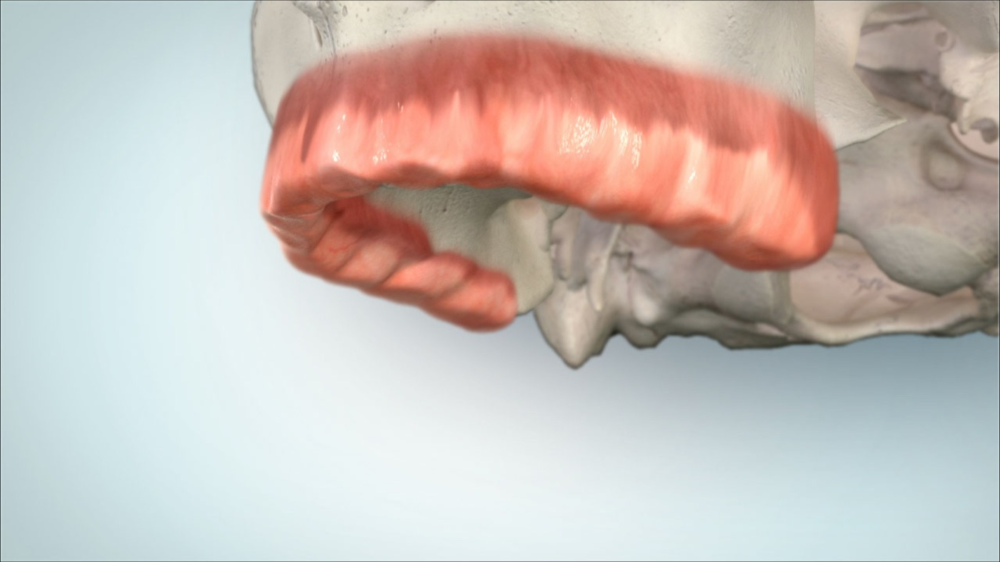
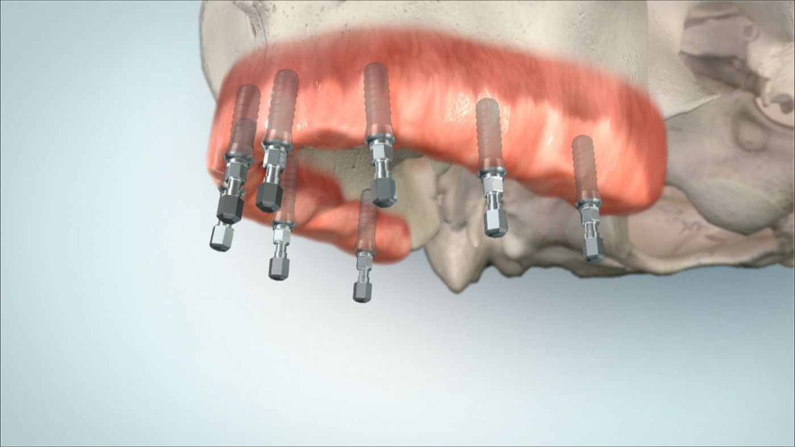
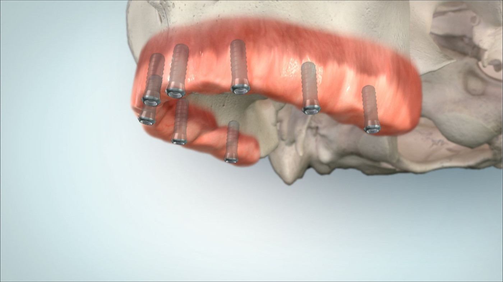
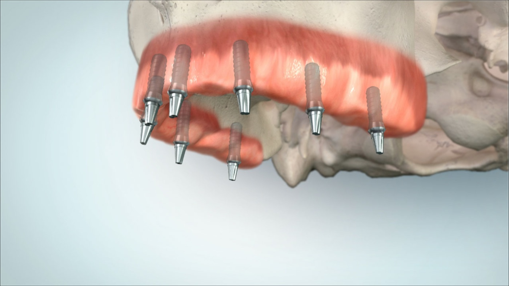
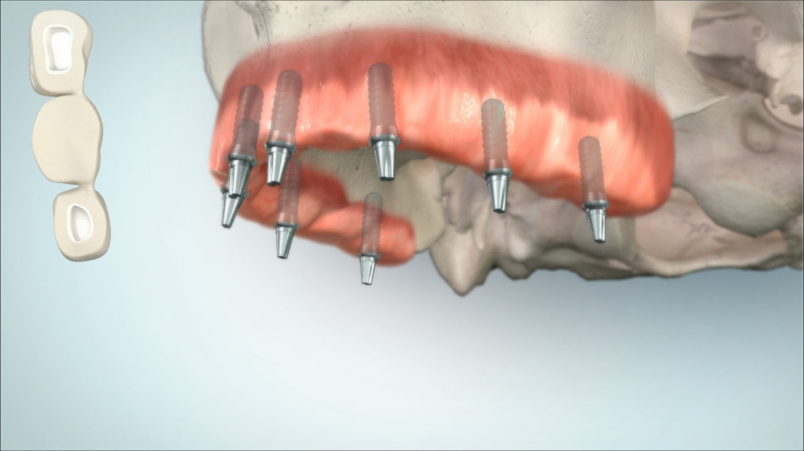
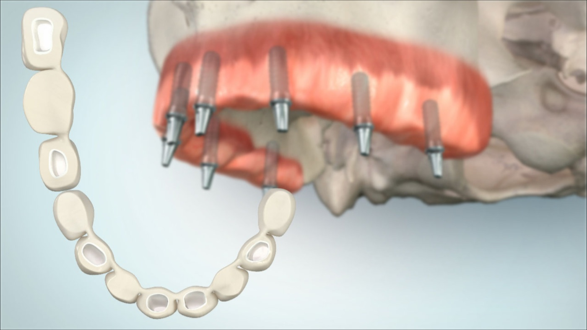
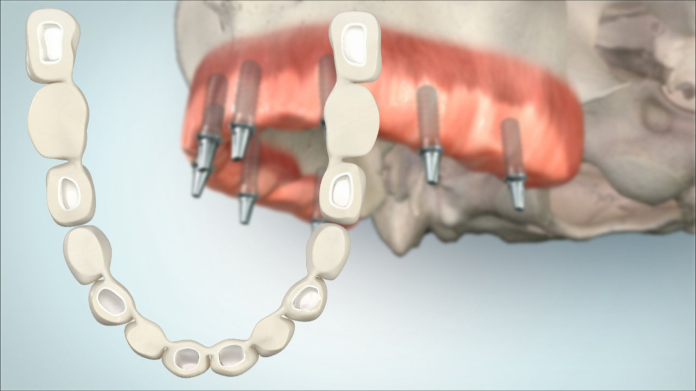
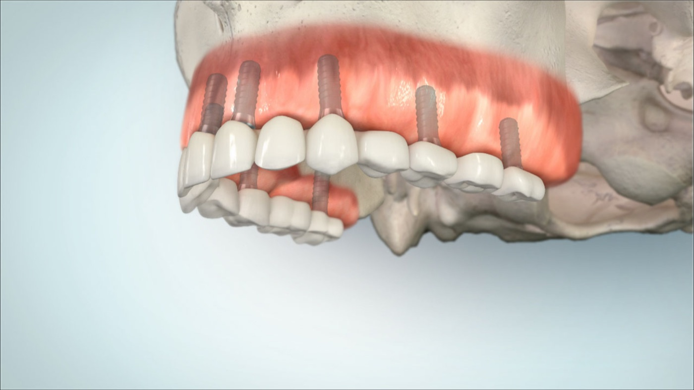
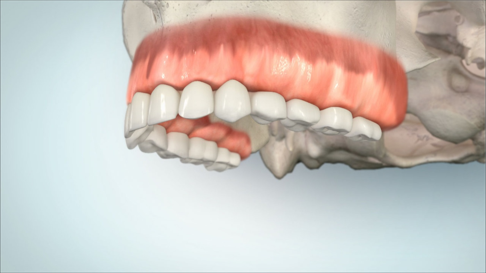

MKG im Carree
Example images · edentulous upper jaw
8 implants · fixed restoration
Example digital visualisation of a fixed upper jaw restoration on 8 implants. This type of solution requires precise prosthetic target planning, sufficient strategic implant positions, suitable bone conditions, cleanability and realistic maintenance.








